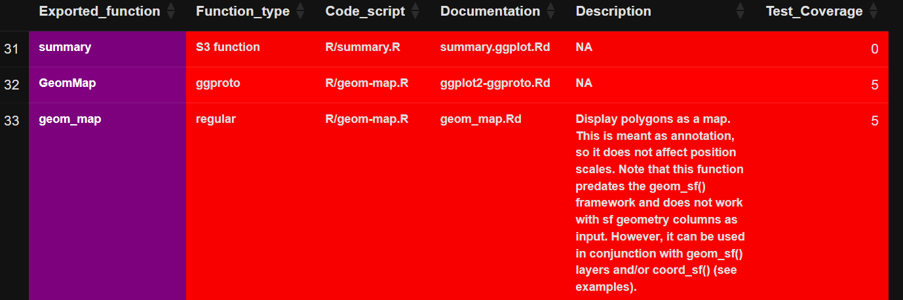
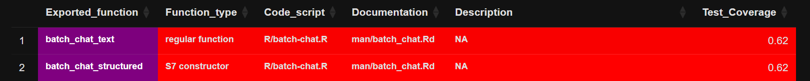

flowchart TD
A[risk_assess_pkg<br/>path / package / file chooser] --> B[set_up_pkg<br/>unpack tarball]
B --> C[install_package_local]
C --> D[assess_pkg]
D --> D1[doc_riskmetric<br/>documentation, news, examples]
D --> D2[test.assessr::get_package_coverage<br/>test coverage]
D --> D3[create_traceability_matrix<br/>exports x docs x tests]
D --> D4[run_rcmdcheck + check_forbidden_notes]
D --> D5[get_dependencies / get_session_dependencies]
D --> D6[check_suggested_exp_funcs]
D --> D7[get_host_package + get_github_data<br/>cran_revdep / bioconductor_reverse_deps<br/>get_cran_total_downloads]
D1 & D2 & D3 & D4 & D5 & D6 & D7 --> E[get_risk_analysis<br/>apply risk-definition.json]
E --> F[results, covr_list, tm_list, check_list, risk_analysis]

Validating R packages, the risk-based way
In pharmaceutical development, the reliability of statistical and TLF software is a regulatory requirement. For organizations using R in submission environments, this mandate means a rigorous approach to validation is needed. {risk.assessr} is an open-source tool — built by the Sanofi/Cytel Validation team and available on CRAN and pharmaverse — that turns package validation into a structured, data-driven workflow.
System validation must support three pillars:
- Accuracy — does the package compute the right answer?
- Reproducibility — does it compute the same answer, every time, on every machine?
- Traceability — can you tie each exported function back to a specification, a test, and a result?
The R Validation Hub classifies R packages into two tiers when considering accuracy:
- Base and recommended (core) packages — developed by the R Foundation and shipped with R itself. These represent the highest tier of reliability.
- Contributed open-source packages — developed by anyone in the community. These vary significantly in accuracy, robustness, and maintenance.
{risk.assessr} assigns each assessed package a quantitative risk profile so that you can decide — with evidence — whether the package is suitable for exploratory work, for a regulatory submission, or should be rejected.
Summary: What does {risk.assessr} give you?
- A single entry point —
risk_assess_pkg()— that downloads a package (or accepts a local.tar.gz), installs it, runsR CMD check, computes test coverage, builds a traceability matrix, and harvests metadata from CRAN, Bioconductor, GitHub, and PubMed. - A configurable, rule-based risk engine (
get_risk_analysis()) whose thresholds live in a JSON file (inst/config/risk-definition.json) — meaning your validation criteria are auditable, editable artefacts. - Two complementary reports:
generate_html_report()— a rich red/yellow/green dashboard for developers and validation engineers.write_summary_report()— a one-page Approved / Rejected / Remediation Needed summary for sign-off, typically triggered by a Validation GitHub Action.
- Support for the modern R object system landscape: regular, S3, S4, S7, R6 and ggproto functions are all classified and traced.
- A built-in dependency tree (
build_dependency_tree()) so that the recursive risk of a package’s imports is visible, not hidden.
The rest of this post takes a few deep dives into the parts of {risk.assessr} that most directly support a validation decision.
How a package gets assessed: the assess_pkg() workflow
Before diving in, it helps to see the shape of the workflow. The user-facing entry point risk_assess_pkg() is a thin wrapper that resolves a package source (a tarball, a CRAN / Bioconductor / internal repo name, or an interactive file chooser), and then hands off to the internal controller function assess_pkg():
Each of those branches produces a slice of evidence; get_risk_analysis() brings them together and applies your risk rules. The next sections walk through the most validation- relevant branches.
Deep dive 1: R CMD check, with three profiles and “forbidden notes”
R CMD check is the largest and most comprehensive check in the R ecosystem — more than 50 individual checks of an R package’s structure, metadata, code, tests, examples and documentation are performed. {risk.assessr} runs it through rcmdcheck::rcmdcheck() that the user can configure: you choose a check profile, and certain notes are reclassified as errors.
Three profiles, picked by setup_rcmdcheck_args()
# the function lives in R/setup_rcmdcheck_args.R
setup_rcmdcheck_args(check_type = "1", build_vignettes = FALSE)check_type |
Profile | What it does |
|---|---|---|
"1" |
Basic (default) | --no-examples, --ignore-vignettes, --no-vignettes, --no-manual |
"2" |
Frugal / no-tests | As "1" plus --no-tests. Used by get_frugal_metrics() for fast scans. |
| anything else | CRAN-like (--as-cran) |
Mirrors a CRAN submission check; honours build_vignettes. |
Every profile also sets _R_CHECK_FORCE_SUGGESTS_=FALSE so a missing Suggests dependency does not fail the check the same way it would on a clean CRAN machine. The check is run with error_on = "never", because the goal is evidence, not a stop signal — a failed package should still produce a report.
Reclassifying “forbidden” notes as errors
The vanilla R CMD check is famously lenient: several issues that should be deal-breakers in a validated environment land as mere NOTEs. check_forbidden_notes() rescans the notes and promotes the dangerous ones to errors, mimicking a CRAN - style check:
forbidden_patterns <- c(
"'.*' import not declared from",
"Namespace in Imports field not imported from",
"no visible global .+ definition"
)In other words, packages that quietly reach into namespaces they didn’t declare, or rely on globals the parser can’t resolve, will be scored as if they had failed outright. The scoring itself is a weighted sum:
# core_metrics.R, run_rcmdcheck()
sum_vars <- c(notes = length(notes), warnings = length(warnings), errors = length(errors))
score_weightings <- c(notes = 0.10, warnings = 0.25, errors = 1.00)
check_score <- 1 - min(sum(score_weightings * sum_vars), 1)The result is a check_score in [0, 1]: 1 means a perfectly clean check, 0 means at least one error (or four warnings, or ten notes).
Deep dive 2: get_risk_analysis() — rules you can version-control
Raw metrics are not decisions. get_risk_analysis() turns numbers (and licence strings) into Low / Medium / High risk levels, using a config file that ships with the package:
system.file("config", "risk-definition.json", package = "risk.assessr")Each entry in that JSON file maps one key in the flattened results to a set of thresholds:
{
"label": "code coverage",
"id": "code_coverage",
"key": "code_coverage",
"thresholds": [
{ "level": "high", "max": 0.6 },
{ "level": "medium", "max": 0.8 },
{ "level": "low", "max": 1 }
]
}The defaults that ship with {risk.assessr} cover the metrics most validation teams care about:
| Risk dimension | Key | Default thresholds (Low / Medium / High) |
|---|---|---|
| Dependency count | dependencies_count |
≤ 20 / ≤ 40 / > 40 |
| Version deprecation | later_version |
≤ 3 later releases / > 3 |
| Code coverage | code_coverage |
> 80% / 60–80% / ≤ 60% |
| Popularity (downloads) | total_download |
> 50M / 3.5M–50M / ≤ 3.5M |
| Licence | license |
MIT/Apache / GPL/LGPL/Artistic / AGPL, SSPL, NOTAVAILABLE, … |
| Reverse dependencies | reverse_dependencies_count |
> 15 / 6–15 / ≤ 5 |
| Documentation breadth | documentation_score |
> 6 indicators / 4–6 / ≤ 3 |
| Examples + Rd coverage | has_ex_docs_score |
> 80% / 60–80% / ≤ 60% |
R CMD check |
cmd_check |
= 1.0 / 0.0–0.8 / 0 |
Creating your own risk profile
These defaults are sensible, but users can set their own rules and values. You can override them globally for an R session in one of two ways:
# Option A: an in-memory R list
options(risk.assessr.risk_definition = strict_coverage_config)
# Option B: point at an external JSON file (recommended for governance)
options(risk.assessr.risk_definition = "config/risk-definition-internal.json")
result <- risk_assess_pkg(package = "stringr")
str(result$risk_analysis)Storing the rules in JSON creates an audit trail: your validation policy has a versioned artefact that can be examined by reviewers or management.
Deep dive 3: documentation metrics that look beyond the README
Good documentation is a leading indicator of long-term reliability. doc_riskmetric() rolls several signals into a single doc_scores list, each of which feeds the risk engine:
- Standard roxygen / Rd documentation.
assess_exported_functions_docs()walkstools::Rd_db(), resolves every exported function to its.Rdpage — supporting shared topics via@rdnameand multiple\alias{}entries — and produceshas_docs_score, the fraction of exported functions that have an Rd page. - Worked examples.
assess_examples()extracts the\examples{}and\example{}sections (including content wrapped in\dontrun{}and\donttest{}) and reportsexample_score, the fraction of exported functions that have an example.\dontrun{}blocks still count — what we are measuring is intent to demonstrate, not whether the example runs on a clean CRAN box. - Family-style documentation. The HTML report explicitly checks whether exported functions are grouped through roxygen
@familytags, surfacing packages that document related functions together (a strong signal of curated APIs). DESCRIPTIONhealth.assess_description_file_elements()reports whether the package declares aBugReportsURL, a maintainer, a website, and a source-control link. Source control detection is intentionally broad —github.com,gitlab.com(including self-hosted GitLab), Bitbucket, R-Forge, Codeberg, SourceForge, Sourcehut, Bioconductor, and academic.ac.uk/.edu.auURLs all count. If theURLfield is empty,BugReportsis used as a fallback.- NEWS, and current NEWS.
assess_news()findsNEWS,NEWS.md, orNEWS.Rdanywhere in the target package (package root,doc/,vignettes/, and recursively underinst/).assess_news_current()then goes one step further and checks that the NEWS file actually mentions the version under assessment — catching the classic “the NEWS file exists, but was last updated three releases ago” failure mode. - Vignettes and codebase size.
assess_vignettes()reports presence;assess_size_codebase()recursively walksR/to give a lines-of-code count (after stripping headers, comments, and blank lines) as a proxy for surface area.
The composite has_ex_docs_score is just the mean of example_score and has_docs_score, giving a single number for “are exported functions both documented and demonstrated?”.
Deep dive 4: traceability matrix — function type and function status
create_traceability_matrix() is an important element for examining packages for accuracy, reproducibility, traceability. For every exported function it produces a row linking:
- the function name (and its class, for methods),
- the function type (regular, S3 generic, S3 method, S3 generic+method, S4 generic, S4 method, S7 generic, S7 class, S7 constructor, R6 class, ggproto class, …),
- the function description parsed from its Rd,
- the documentation file in
man/, - the source script in
R/, - the per-script test coverage percentage from
{test.assessr}/{covr}, - the test scripts that exercise the function.
Classifying every flavour of R function
get_exports() and classify_function_body() together handle the modern R function types (regular and Object Oriented Programming (OOP) functions. A selection from the production code:
if (inherits(obj, "S7_generic")) return(list(name = f, class = NA, type = "S7 generic"))
if (inherits(obj, "S7_class")) return(list(name = f, class = NA, type = "S7 class"))
if (grepl("S7::new\\(|S7::new_object\\(", body_text))
return(list(name = f, class = NA, type = "S7 constructor"))
if (methods::isGeneric(generic_clean))
row$function_type <- "S4 method, S4 generic"S3 methods are parsed straight out of NAMESPACE lines like S3method(print, foo), and the classifier later upgrades the label if it finds (or fails to find) UseMethod() calls in the body. R6 and ggproto classes have dedicated extractors so that every method body — not just the top-level constructor — is available for downstream pattern matching.
This matters in regulated work because validation auditors rarely accept “exported function” as a single bucket: an S4 generic is documented and tested very differently from an R6 method, and an S7 constructor is something else again.
The following are examples of traceability matrices report:
First, an example from ggplot2 version 3.5.1:

This shows 3 functions; each with a different function type.
Second, an example from ellmer version 0.3.0:

Fine-grained matrices: by test coverage and by function status
Once the master matrix is built, fine_grained_tms() filters it into seven views, each of which lands in the HTML report as a tab:
tm_list$coverage$high_risk # coverage_percent <= 60 or NA
tm_list$coverage$medium_risk # 60 < coverage_percent < 80
tm_list$coverage$low_risk # coverage_percent >= 80
tm_list$function_type$defunct # body / docs mention defunct / deprecated / superseded
tm_list$function_type$imported # docs / scripts mention "imported"
tm_list$function_type$rexported # docs / scripts mention "re-exported" / "reexports"
tm_list$function_type$experimental # docs / scripts mention "experimental"The result is a matrix that answers the question a validation reviewer actually asks: not “how many functions are tested?” but “which functions are tested, which are deprecated, and which are still experimental?” — separately, per package, on one screen.
Deep dive 5: where popularity comes from
Popularity can provide guidance about packages’ use in general. {risk.assessr} harvests it from four independent sources, so a package with high downloads, active GitHub commits, and peer-reviewed citations earns its rating instead of relying on a single ranking.
| Source | Function(s) | What it tells you |
|---|---|---|
| CRAN | get_cran_total_downloads(), get_package_download_cran() |
Total + daily download counts via cranlogs.r-pkg.org. |
| CRAN | cran_revdep() (with cached cran_packages()) |
Reverse dependencies on CRAN. |
| Bioconductor | bioconductor_reverse_deps(), fetch_bioconductor_releases() |
Reverse dependencies and release metadata. |
| GitHub | get_github_data() |
Stars, forks, open issues, commits in the last 30 days, and average issue close time, via the GitHub REST API (PAT-friendly via GITHUB_TOKEN). |
| PubMed | get_pubmed_count(), get_pubmed_by_year() |
Citation counts via NCBI E-utilities — useful evidence for statistical / pharmacometric packages. |
A subtle but important detail: cran_packages() is cached for 30 minutes in a package-level environment, so a typical scan does not hammer the CRAN metadata endpoint, and repeated cran_revdep() calls in the same session return identical snapshots — important for reproducible test runs.
Deep dive 6: the dependency tree — recursive risk, made visible
A package is only as safe as its imports. build_dependency_tree() recursively walks the Imports field of a package’s DESCRIPTION, stopping at base / recommended packages or at a user-controlled max_level:
tree <- build_dependency_tree("ggplot2", get_license = TRUE, max_level = 5)What you get back is a nested list whose leaves are either "base" (terminal) or another node with version and (optionally) per-package license fields. That recursive licence collection matters: a permissively-licensed top-level package can still drag in a GPL-only dependency several levels down — and {risk.assessr} will provide details in the report.
For lock-file-driven projects, risk_assess_pkg_lock_files() plays the same role for renv.lock and pak.lock, so a project’s resolved environment can be scored, not just an individual package.
Reporting: two artefacts, two audiences
{risk.assessr} generates two complementary reports:
generate_html_report()— the technical view. Each metric is rendered with a red / yellow / green badge corresponding to High / Medium / Low risk. Reverse-dependency lists, download charts, dependency trees, and the seven traceability matrix tabs are all there.write_summary_report()— the one-page sign-off. It renders anApproved,Rejected, orRemediation Neededrecommendation, derived from the risk profile, with enough context for a validation engineer to apply critical judgement. Typically driven by a Validation GitHub Action so that every package, every version, leaves a paper trail.
A typical end-to-end call looks like:
library(risk.assessr)
# Score a CRAN package, with all defaults
result <- risk_assess_pkg(package = "stringr")
# Or score a local tarball
result <- risk_assess_pkg(path = "path/to/your/package.tar.gz")
# Generate the dashboard
generate_html_report(result, output_dir = "reports")
# Generate the one-page sign-off
write_summary_report(result, output_dir = "reports")Final takeaways
{risk.assessr} is a scaffold for evidence-based validation. Its strengths come from a deliberate set of design choices:
- Run
R CMD checkwith a customisable profile, then upgrade silent-but-dangerous notes into errors. - Score documentation against multiple metrics, including whether the NEWS file actually mentions the version under review.
- Build a traceability matrix that respects S3, S4, S7, R6 and ggproto — and slices it by both coverage and function status (defunct, imported, re-exported, experimental).
- Aggregate popularity across CRAN, Bioconductor, GitHub, and PubMed.
- Make recursive dependency and licence risk visible.
- Keep the rules that turn metrics into decisions in a versioned JSON file — so the validation policy itself is auditable.
The result is an audit trail that any validation reviewer can analyse and sign off.
{risk.assessr} is community-driven; if you have ideas, find an edge case, or want to contribute a new metric, please open an issue or a PR on GitHub. We’d love to hear from you.
Last updated
2026-08-31 20:09:07.251518
Details
Reuse
Citation
BibTeX citation:
@online{gillian_hugo_bottois2026,
author = {Gillian Hugo Bottois, Edward},
title = {Risk.assessr: {A} {Data-Driven} {Workflow} for {R} {Package}
{Validation} in {Regulated} {Environments}},
date = {2026-06-23},
url = {https://pharmaverse.github.io/blog/posts/2026-06-23-risk-assessr-a-data/risk-assessr-a-data.html},
langid = {en}
}
For attribution, please cite this work as:
Gillian Hugo Bottois, Edward. 2026. “Risk.assessr: A Data-Driven
Workflow for R Package Validation in Regulated Environments.”
June 23, 2026. https://pharmaverse.github.io/blog/posts/2026-06-23-risk-assessr-a-data/risk-assessr-a-data.html.